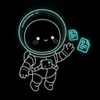
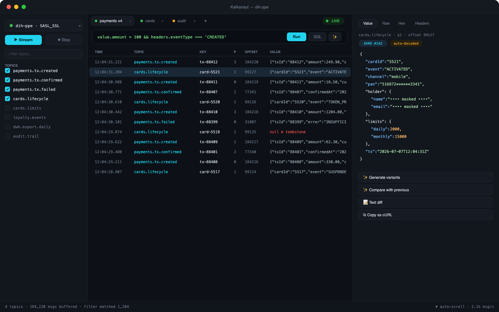
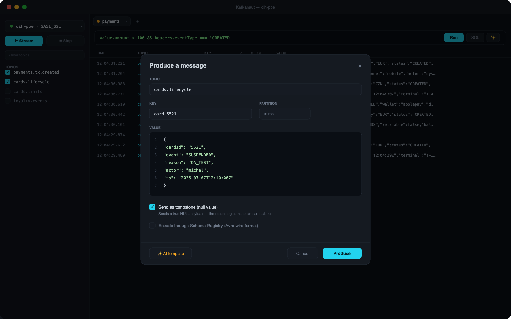
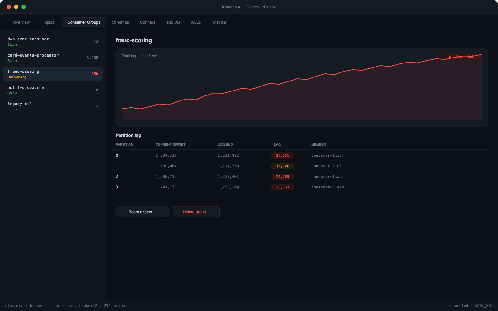
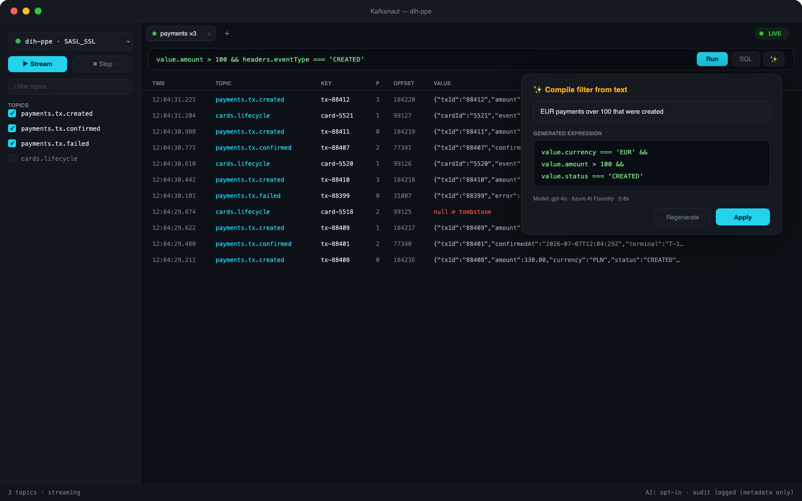

kafkanaut v0.48.0Point Kafkanaut at any cluster and browse, search and filter live data across topics — in parallel tabs, with Avro and Protobuf decoded automatically. And because it reads with assign() only, it never joins a consumer group and never commits offsets — production consumers won't even notice. No account, no telemetry — everything stays on your machine.

Browsing and tailing use partition assignment, never subscribe(). Kafkanaut never joins a consumer group and never commits offsets when reading — no rebalances triggered, your consumers' lag and committed positions stay exactly as they were.
SASL passwords, mTLS certs and OAuth secrets are stored in a local file readable only by your user account — never synced to any cloud, never sent anywhere. No telemetry, no phone-home, no account.
Full cluster admin is there when you need it — reset offsets, create and delete topics, delete records. But nothing happens silently: destructive actions require typing the resource name to confirm. Fat fingers can't drop payments.tx.created.
Merge any number of topics into one live stream and search across all of them at once. Virtualized scroll stays smooth past 100k messages. Start from oldest, latest N, a specific offset, a timestamp, or a relative range like -15m.
WHERE — or ✨ describe the filter in plain EnglishSchema Registry auto-decode handles Avro, Protobuf and JSON Schema in Confluent wire format. Flip between JSON tree, raw, hex and headers on any message.
*card*, iban, email patternsSingle messages with a Monaco JSON editor, headers, explicit partition — and true tombstones with NULL payloads. Bulk produce from file with dry-run and throttle.


Brokers, topics, consumer groups, Schema Registry, Kafka Connect, ksqlDB, ACLs and JMX metrics — administered from the same app you tail with. Every change is a deliberate, confirmed action.
The AI extension no commercial competitor ships — and it's off by default. Describe a filter in plain English and get a validated expression. Generate realistic test messages from a real one. Summarize what's in a topic, or get a plain-English diff between two messages.

| Kafkanaut | Kadeck | Conduktor | AKHQ | Offset Explorer | |
|---|---|---|---|---|---|
| Price | Free | Free tier + paid | Paid (free trial) | Free (self-hosted) | Free eval, paid license |
| AI features | ✓ opt-in, multi-provider | ✗ | ✗ | ✗ | ✗ |
| Read-safety (assign-only) | ✓ by design | ✗ | ✗ | ✗ | ✗ |
| Native desktop | ✓ Tauri, ~15 MB | Electron | Web console | Web app you deploy | Java desktop |
| Schema Registry admin | ✓ free | paid tier | paid tier | ✓ | view only |
| Connect / ksqlDB | ✓ free | paid tier | paid tier | Connect only | ✗ |
| No account / no telemetry | ✓ | account required | account required | ✓ | ✓ |
Free. No account, no telemetry, no strings.
No. Add a connection, pick your topics, and you're reading live data. Filters are plain JavaScript or SQL WHERE — or just describe what you're looking for in English and let the AI write the filter for you.
Yes. Free to download and use — no tiers, no seat pricing, no account, no "community edition" with the good parts removed.
No. Zero telemetry, no account, no phone-home. Credentials are stored locally on your machine and never sent anywhere. The AI extension is opt-in, and you can point it at a local Ollama instance so nothing ever leaves your machine — its audit log stores metadata only, never payloads.
Reading can't — Kafkanaut reads with assign() only, never joins a consumer group, never commits offsets. Admin operations (reset offsets, delete topics, delete records) do exist — that's the point of a client — but they're explicit actions, and destructive ones require typed confirmation.
macOS and Windows today. A Linux build is on the roadmap.